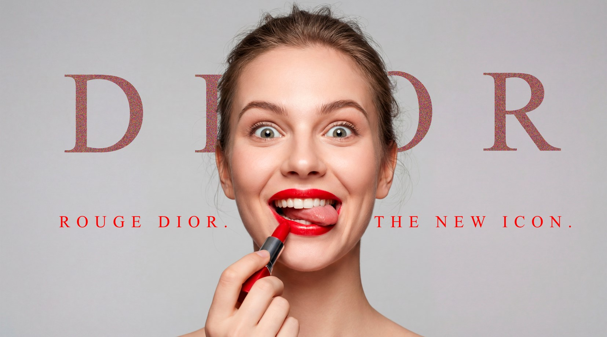
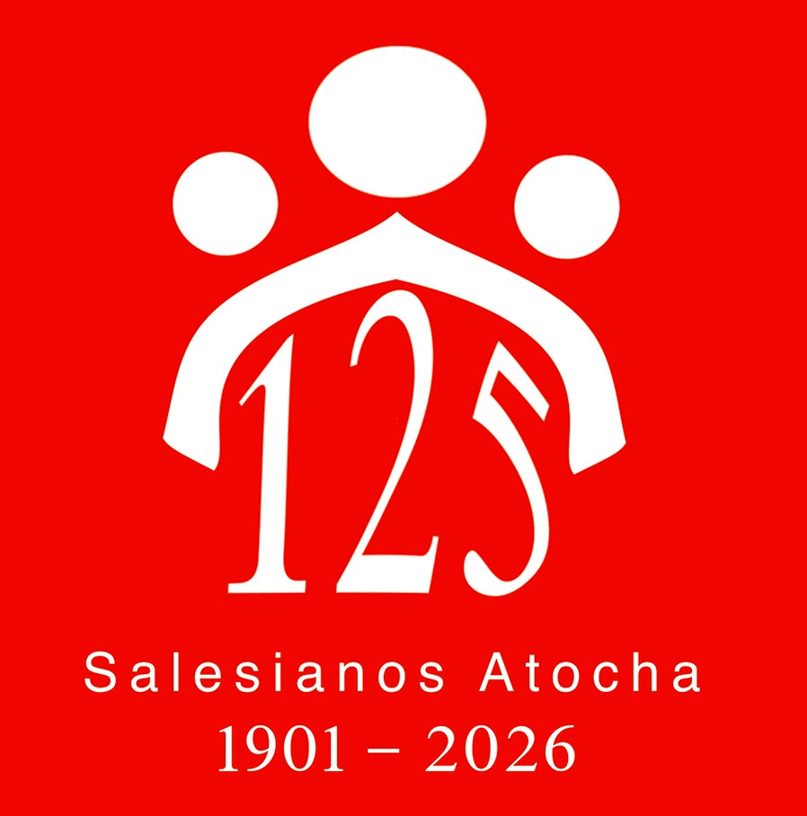
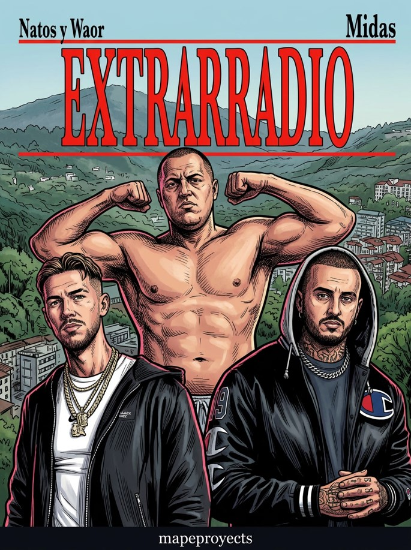

Ver imagen
×
Diseños
Scroll
Selección de diseños
Diseño 1 — GRECAS
Diseño 2 — OMAR
Diseño 3 — ROLEX
Diseño 4 — RUBII
Diseño 5 — ZAPA
Diseño 6 — ZAPA 2
Diseño 7 — PRINCIPITO
Diseño 8 — PRADA

Diseño 9 — DIOR

Diseño 10 — SALESIANOS

Diseño 11 — EXTRARRADIO
Volver al inicio
Scheme 1
Scheme 2
Scheme 3
Scheme 4
Scheme 5
Adjust Colors
Color Adjuster
×